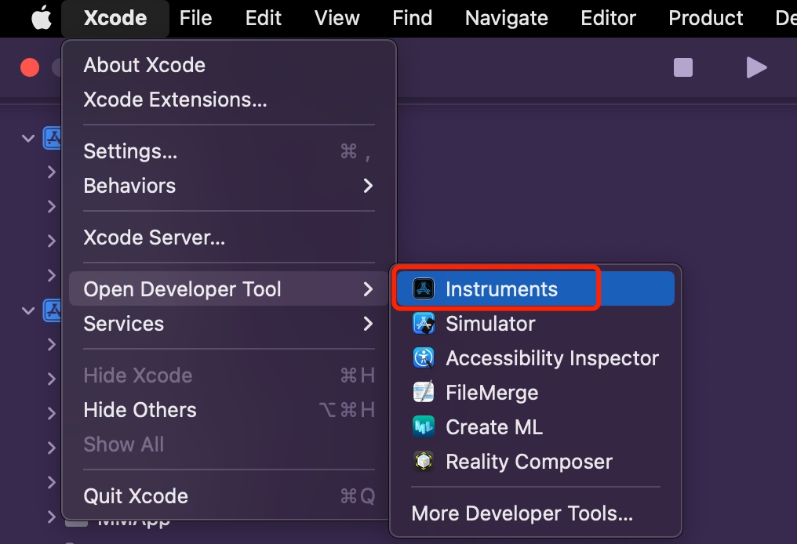
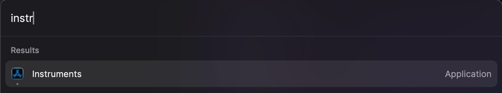
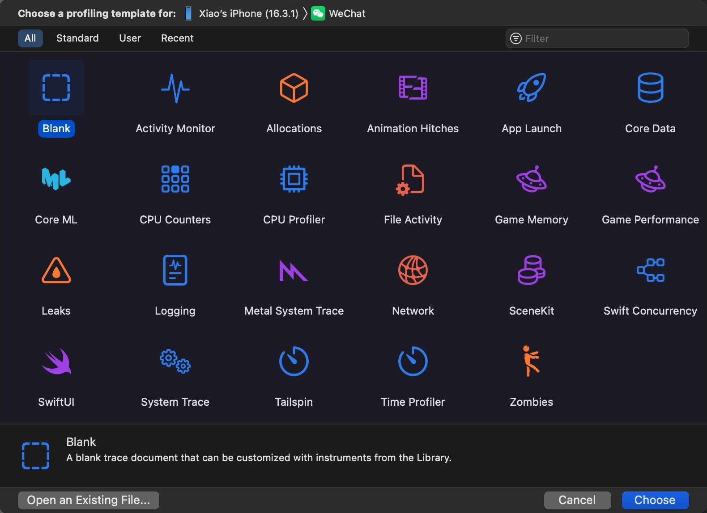
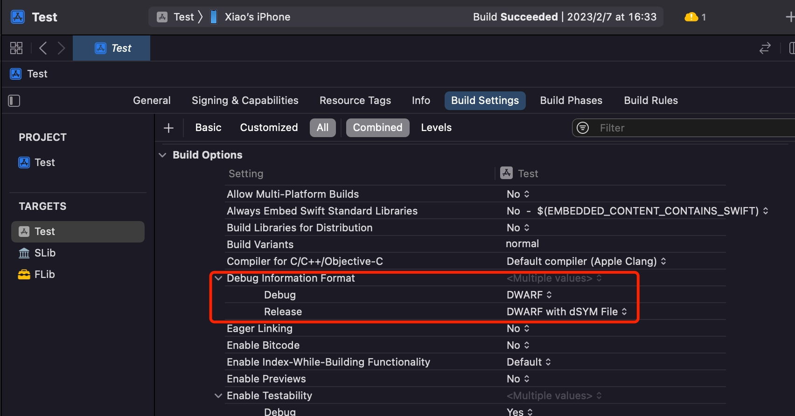
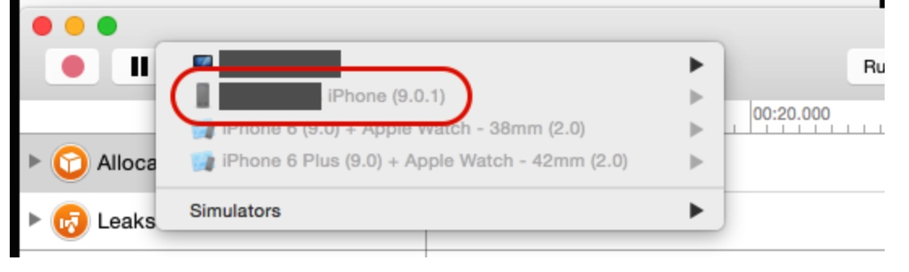

XCode Instruments 使用
XCode 是苹果官方提供的 IDE，虽然坑很多，但是也提供了许多比 Android Studio 更好用的工具，比如 Instruments，Instruments 里面包含了好几个很好用的工具，供排查分析问题使用。这些工具的大致使用方式都是类似的，本文主要介绍一些通用的能力和技巧。
Instruments 是什么
Instruments 是 XCode 提供的一个工具集合，比如分析内存、分析 CPU 占用、分析函数耗时等等。正确的使用这些工具可以帮助我们很好的排查和分析问题。
Instruments 其实是个独立的 APP，可以通过 XCode -> Open Developer Tool -> Instruments 打开 Instruments。

也可以直接搜索这个软件。

打开之后 Instruments 之后可以看到下面这么多工具，每一个工具都可以帮助我们很好的分析问题。

子工具使用指引
Instruments 本质上是一系列工具的集合，每个工具怎么用呢？可以参考下面这些文章。
因为 Instruments 里的各个工具的使用方式和界面基本都是一样的，而且使用起来和很简单，所以下面的系列文章不提最基本的使用方法。
Time Profiler：iOS 性能调优 - 耗时分析
Allocations：iOS 内存分析 - Allocations
常见问题
符号问题
不管是查什么问题，本质上都是为了查某些函数和对象的表现，需要配置符号，不然看到的都是一堆的指针，看不出具体是什么函数，也就无法定位问题。
iOS 的调试信息的格式是 DWARF，我们需要导出一个单独的 dSYM 文件给 Instruments 使用。如果你不熟悉 DWARF 和 dSYM，可以参考 iOS 符号之 DWARF 和 dSYM。
找到项目设置，一般我们都是用 Debug 这个 Scheme，将其从默认的 DWARF 改为 DWARF with dSYM File，然后再编译安装到手机，然后就可以愉快的使用 Instruments 了。
这里注意如果使用 Instruments 完毕后记得改回 DWARF，否则 XCode 每次都会生成单独的 dSYM 文件，会导致安装时间变长，平时开发是没必要的。

当然，按上面的操作配置之后，在实际使用过程中依然经常遇到没有符号的问题，甚至是先有符号，然后重试一次又没符号，这种不要慌，重启 Instruments 即可，有时候一次不行就再重启一次，还不行就再重启。。。亲测可行。
无法选择手机

重启手机就行了：
转载请注明出处：XCode Instruments 使用 - 专业点
欢迎关注我的公众号

推荐

公众号推荐
欢迎关注我的公众号一起愉快的交流。